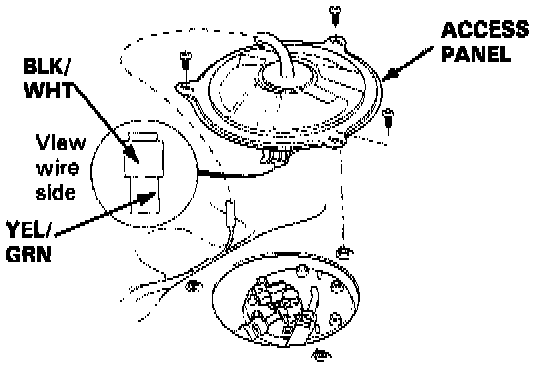
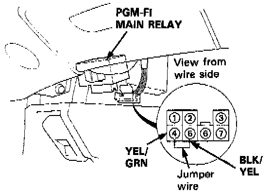

Fuel Pump: Testing and Inspection
WARNING: Do not smoke during the test. Keep open flame away from your work area.
If you suspect a problem with the fuel pump, check that the fuel pump actually runs; when it is ON, you will hear some noise if you hold your ear to the fuel fill port with the fuel fill cap removed. The fuel pump should run for two seconds, when ignition switch is first turned on. If the fuel pump does not make noise, check as follows:
1. Remove the rear seat.
2. Remove the access panel.
Fuel Pump Access Panel:

3. Disconnect the 2P connector from the fuel pump.
CAUTION: Be sure to turn the ignition switch OFF before disconnecting the wires.
4. Connect the BLK/YEL wire and YEL/GRN wire with a jumper wire at the PGM-FI main relay connector.
PGM FI Main Relay:

5. Check that battery voltage is available at the fuel pump connector when the ignition switch is turned ON (positive probe to the YEL/GRN wire, negative probe to the BLK/WHT wire).
^ If battery voltage is available, replace the fuel pump.
^ If there is no voltage, check the fuel pump ground and wire harness.